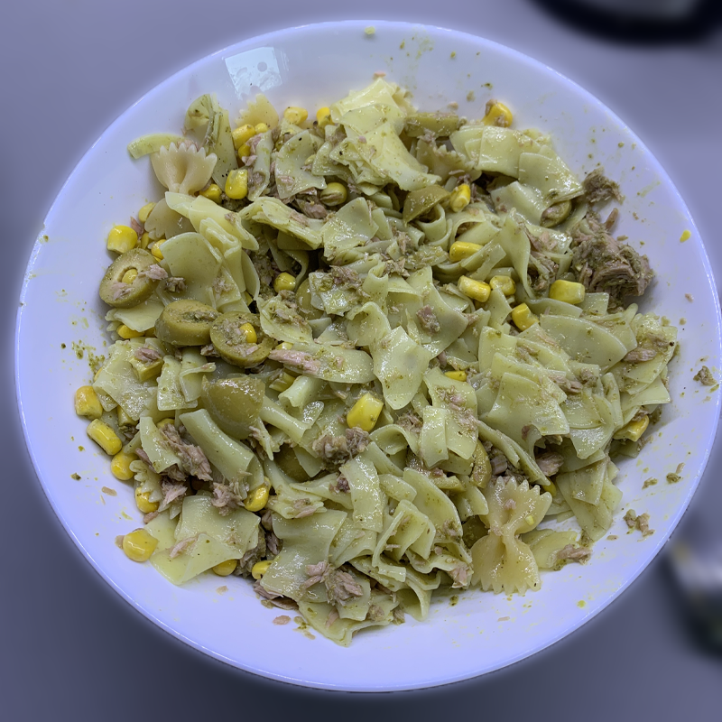

Tuna Pesto Pasta
>
Easy to make, protein filled pasta that tastes heavenly!
All that is required is some basic food and no more than 20 minutes of your time.
Ingredients
- Pasta of your choice
- Sweet corn
- Can of tuna
- Pitted olives
- Pesto
- Olive oil
- Salt
- Black or mixed pepper
Recipe step-by-step
- Add water with some salt to a pot, bring to boil
- Add in your pasta, cook according to the package
- While your pasta is being cooked, we can prepare the rest of the meal
- Get a bowl, add in your tuna
- Mix some pesto into the bowl
- Slice up your olives and add them as well
- Lastly add in your sweet corn
- Your tuna pesto special sauce is ready!
- Once cooked, take out your pasta, rinse with water and put them in a new bowl
- Add some olive oil to the pasta
- Next, add your tuna pesto sauce in and mix well!
- Lastly, add some pepper to your liking
- Serve!